Instalación de distribuciones#
En estos ejercicios vamos a instalar en máquinas virtuales varias distribuciones de GNU/Linux. En cada una veremos cómo se hace la instalación y las particiones, cómo se instalan programas (con el entorno gráfico y con la línea de comandos) y cómo se gestionan los usuarios y los permisos desde el entorno gráfico.
Ubuntu#

Ejercicio 01
Responde a las siguientes preguntas:
Para instalar Ubuntu es necesario disponer de un ordenador con una serie de características mínimas. ¿Cuáles son?
¿Hay alguna distribución basada en Ubuntu que esté preparada para equipos con pocos recursos? ¿Cuál o cuáles son?
¿En qué otra distribución está basada Ubuntu?
Ejercicio 02. Instalación
Descárgate el sistema operativo Ubuntu 24.04 LTS en formato ISO de su página oficial
Crea una máquina virtual llamada MV Ubuntu 24.04 con 4096 MB de RAM y un disco duro de 60 GB reservado dinámicamente
Inicia la máquina y procede a la instalación. En el tipo de instalación elige Instalación manual y haz las siguientes particiones:
Tamaño
Formato
Punto de montaje
40 GB
ext4
/El resto
ext4
/homeSi la máquina virtual tiene activado EFI, el instalador te pedirá además una partición EFI (ESP) de unos 300 MB al principio del disco.
Fíjate en que no hemos hecho partición de intercambio (swap). Cuando termines la instalación, inicia Ubuntu, abre una terminal y ejecuta:
swapon --show¿Dónde está el área de intercambio? ¿Es una partición?
Sube un pantallazo donde se vean la RAM, las particiones del disco duro, la salida de
swapon --showy la IP que has puesto (10.4.X.Y). Para ello abre GParted, el Monitor del sistema y la configuración de red (desde Configuración o directamente desde , en la parte derecha de la barra superior del escritorio). Comprueba que tienes internet ejecutando los comandos
, en la parte derecha de la barra superior del escritorio). Comprueba que tienes internet ejecutando los comandos ip ayping -c2 8.8.8.8Ejemplo de pantallazo:

Importante
Crea una clonación enlazada de MV Ubuntu 24.04 y continúa los ejercicios con el clon enlazado.
Ejercicio 03. Programas
Instalar programas utilizando el entorno gráfico
Desde el App Center (en versiones anteriores, Ubuntu Software) es posible buscar, instalar, desinstalar y actualizar las aplicaciones de los repositorios de Ubuntu. Estos repositorios son sitios web donde se almacenan los paquetes que, una vez descargados, instalan el software en el ordenador. Inicialmente Ubuntu tiene una serie de repositorios oficiales, mantenidos por el equipo de Ubuntu.
Crea una carpeta en el escritorio con tu nombre. Busca en el App Center un programa llamado VLC, instálalo, ábrelo y sube un pantallazo en el que se vean el programa y la carpeta con tu nombre.
Instalar programas usando la línea de comandos
Para instalar paquetes desde la terminal en Ubuntu usaremos APT (Advanced Packaging Tool), un conjunto de herramientas para la gestión de paquetes que facilita la actualización, instalación y eliminación de programas.
Lo primero es actualizar la lista de paquetes de los repositorios:
sudo apt-get update
Después aplica las actualizaciones de los paquetes que tengan versiones nuevas:
sudo apt-get upgrade
Para instalar un programa se indica el paquete principal y APT busca sus dependencias y pide confirmación. Se pueden instalar varios paquetes a la vez separando sus nombres con espacios:
sudo apt install tree
Los repositorios que usa APT están en el archivo /etc/apt/sources.list y en el directorio /etc/apt/sources.list.d/.
Cuando termines, ejecuta desde la terminal el comando tree sobre tu Escritorio y sube un pantallazo.
Ejercicio 04. Usuarios con entorno gráfico
Para añadir usuarios con el entorno gráfico ve a Configuración / Usuarios, pulsa 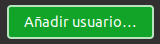

grafico_tu_nombre_01
grafico_tu_nombre_02
grafico_tu_nombre_03
Si el ejercicio se hace entre dos personas, usa el nombre de las dos.

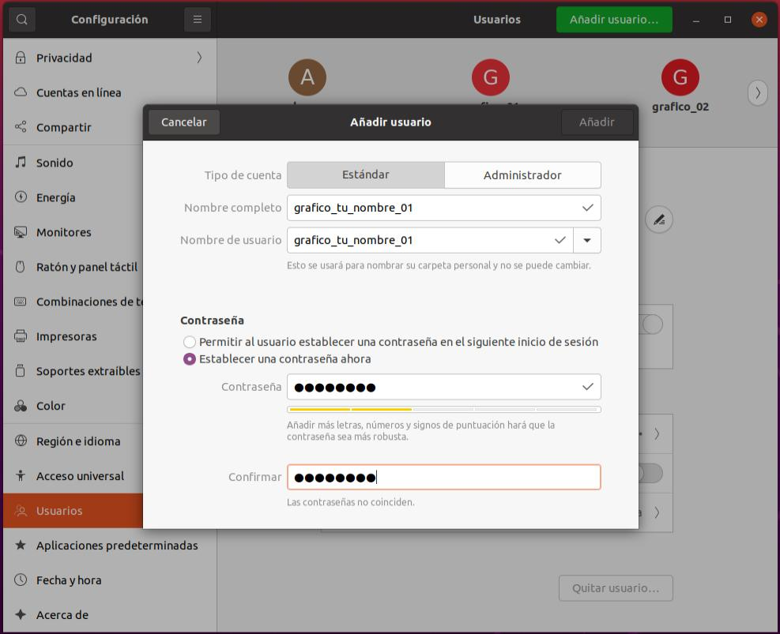
Cuando termines, sube un pantallazo de los usuarios que aparecen en la configuración del sistema, como se ve a continuación:

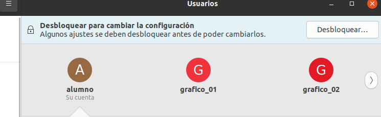
Ejercicio 05. Permisos con entorno gráfico
Podemos ver los permisos de un archivo o una carpeta en sus propiedades (botón derecho del ratón). Crea una carpeta con tu nombre en el escritorio y dale a Otros el acceso Crear y eliminar archivos:

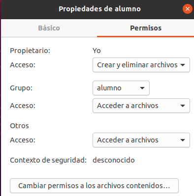
Crea otra carpeta con tu apellido y pon para Otros el acceso Ninguno.
Entra con el usuario grafico_tu_nombre_01, abre el administrador de archivos, ve a /home/alumno/Escritorio y responde a las siguientes preguntas:
Intenta entrar en la carpeta con tu apellido. ¿Qué sucede?
Intenta crear una carpeta dentro de la carpeta con tu apellido. ¿Qué sucede?
Intenta entrar en la carpeta con tu nombre. ¿Qué sucede?
Intenta crear una carpeta dentro de la carpeta con tu nombre. ¿Qué sucede?
Cuando termines los ejercicios y los haya corregido el profesor, puedes borrar la máquina virtual enlazada, pero deja la original.
Fedora#

Ejercicio 01
Desde la página de Fedora descárgate Fedora Workstation para la arquitectura x86_64
Inicia la máquina y procede a la instalación desde Start Fedora-Workstation-Live
Install to Hard Drive
Selecciona el destino de la instalación, deja la configuración de almacenamiento personalizada y haz las siguientes particiones:
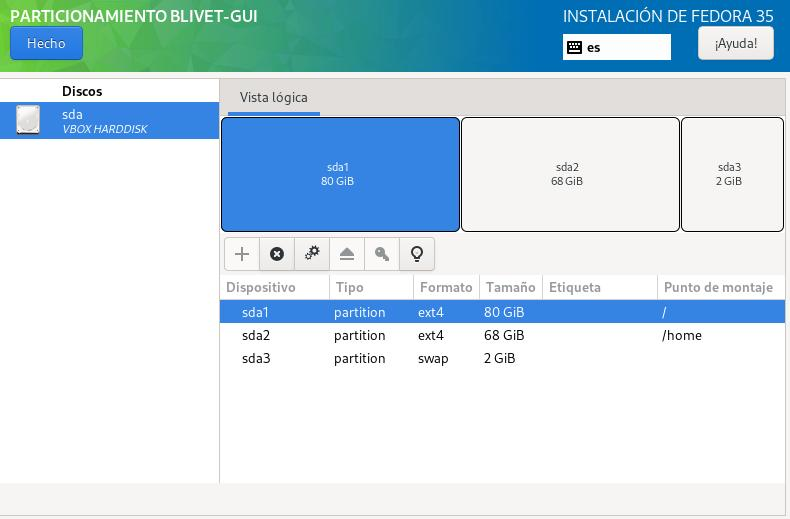
Comienza la instalación; cuando termine, quita la ISO del disco virtual y reinicia la máquina
Inicia la configuración, desactivando u omitiendo todos los pasos:
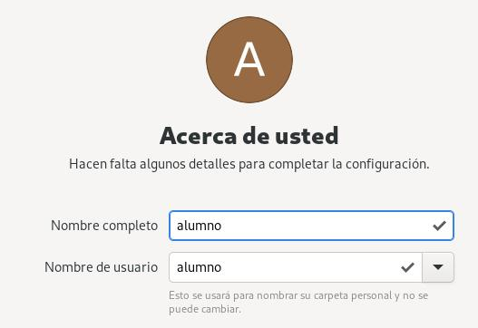
Pon la contraseña alumno
Crea una carpeta en el escritorio con tu nombre y utiliza el navegador de archivos para verla
Añade a favoritos el Monitor del sistema
Cambia la IP por 10.4.X.Y
Sube un pantallazo en el que se vean la carpeta que has creado y un ping a 8.8.8.8:
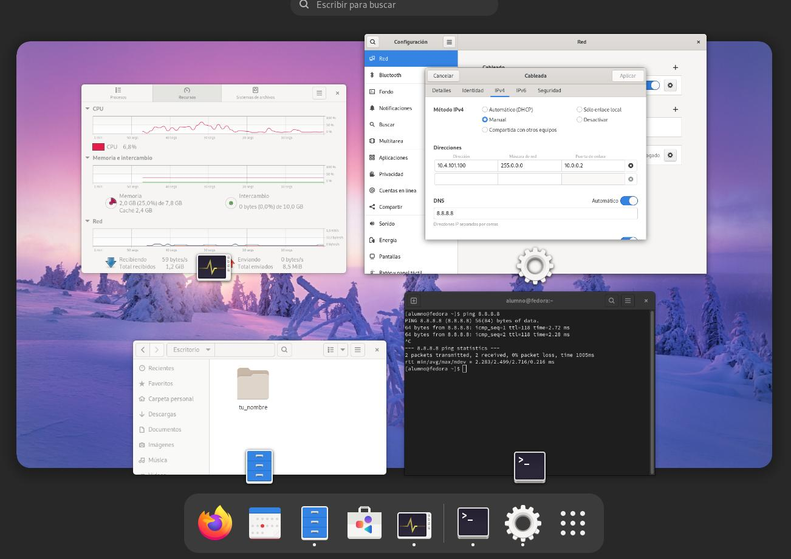


Ejercicio 02
Instalar programas utilizando el entorno gráfico
Desde Software, la aplicación de GNOME para gestionar los programas con el entorno gráfico, instala el programa Scratch. Abre un proyecto de ejemplo, ejecútalo y sube un pantallazo.
Instalar programas usando la línea de comandos
En Fedora los paquetes se gestionan con dnf (antes se usaba yum), un gestor de paquetes para sistemas basados en RPM que instala, actualiza y elimina programas y calcula automáticamente sus dependencias. Responde a las siguientes preguntas:
¿Cómo instalarías con la línea de comandos el programa gedit?
¿Cómo actualizarías el sistema con la línea de comandos?
Ejercicio 03. Usuarios con entorno gráfico
Para añadir usuarios con el entorno gráfico ve a Configuración / Usuarios y crea los usuarios grafico_tu_nombre_01, grafico_tu_nombre_02 y grafico_tu_nombre_03. Si el ejercicio se hace entre dos personas, usa el nombre de las dos.

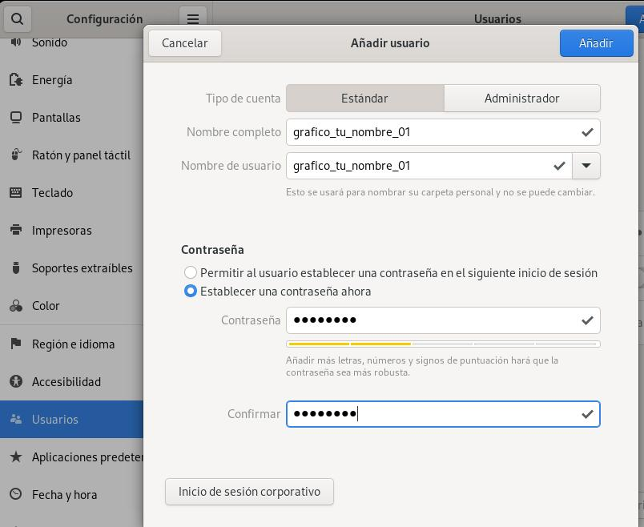
Cuando termines, sube un pantallazo de los usuarios que aparecen en la configuración del sistema:

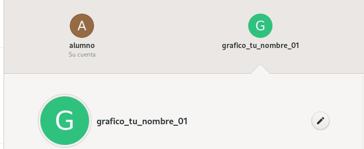
Cuando termines los ejercicios y los haya corregido el profesor, borra la máquina virtual para dejar espacio en el disco duro.
openSUSE#

Ejercicio 01
Descárgate openSUSE Leap (x86_64)
Inicia la ISO y procede a la instalación desde el menú que aparece en el arranque
Acepta la licencia, pon el teclado en español y configura la IP
Selecciona el escritorio KDE Plasma
Deja la propuesta de particionamiento que hace openSUSE; en mi caso sería:

Mirando tus particiones, responde a las siguientes preguntas:
¿Dónde va a montar
/? ¿Qué espacio ocupa?¿Va a dejar una partición diferente para los datos de los usuarios?
¿Qué sistema de archivos utiliza para
/?Busca en internet qué características tiene ese sistema de archivos
Ejercicio 02
Una vez hayas respondido a las preguntas, continúa con la instalación
Crea el usuario local alumno con contraseña alumno y deshabilita el inicio de sesión automático
Cambia el fondo del escritorio y crea una carpeta llamada tu_nombre
Crea un acceso directo del Monitor del sistema en el escritorio
Añade un acceso directo de Firefox en el panel
Sube un pantallazo en el que se vean la carpeta que has creado y un ping a 8.8.8.8:

Ejercicio 03
Responde a las siguientes preguntas:
¿Qué es Myrlyn?
¿Para qué sirve?
Busca la forma de abrirlo. ¿Cómo lo has abierto?

Ejercicio 04
Instalar programas utilizando el entorno gráfico
Desde Myrlyn busca el programa kicad e instálalo. Abre el programa, abre un proyecto desde una plantilla, selecciona el Arduino UNO y sube un pantallazo en el que aparezca la carpeta con tu nombre, por ejemplo:

Instalar programas usando la línea de comandos
Para instalar programas desde la línea de comandos utilizaremos zypper. Igual que en Ubuntu, lo primero es actualizar:
sudo zypper update
Y para instalar un programa se indica el paquete principal y zypper busca sus dependencias:
sudo zypper install tree
Actualiza el sistema e instala el programa blender con la línea de comandos. Cuando termines, sube un pantallazo en el que se vean el programa, la carpeta con tu nombre y un poco de la instalación:

Instalar programas usando Discover
Discover es una tienda de aplicaciones que da acceso a varias categorías de aplicaciones, complementos de aplicaciones y complementos de Plasma: desde aplicaciones de accesibilidad y accesorios hasta herramientas para desarrolladores y aplicaciones educativas. También muestra las aplicaciones instaladas y es configurable. Ábrelo, busca una aplicación e instálala; por último, ábrela y sube un pantallazo.
Ejercicio 05. Usuarios con entorno gráfico
Abre el gestor de usuarios de openSUSE y crea los siguientes usuarios:
grafico_tu_nombre_a1
grafico_tu_nombre_a2
grafico_tu_nombre_b1
grafico_tu_nombre_b2
Instala y configura Cockpit:
sudo zypper in cockpit sudo systemctl enable --now cockpit.socket sudo firewall-cmd --permanent --add-service=cockpit sudo firewall-cmd --reload
Abre en el navegador https://localhost:9090
Crea un grupo llamado grupoA y otro llamado grupoB, y mete los usuarios en los grupos
Sube un pantallazo como el siguiente:

Ejercicio 06. Permisos con entorno gráfico
Podemos ver los permisos de un archivo o una carpeta en sus propiedades (botón derecho del ratón). Entra con el usuario grafico_tu_nombre_a2, crea una carpeta con ese nombre en el escritorio y dale los siguientes permisos:

Responde a las siguientes preguntas:
Entra con el usuario grafico_tu_nombre_a1 en la carpeta que has creado e intenta hacer una carpeta nueva. ¿Puedes entrar? ¿Puedes crear una carpeta?
Entra con el usuario grafico_tu_nombre_b1 en la carpeta que has creado e intenta hacer una carpeta nueva. ¿Puedes entrar? ¿Puedes crear una carpeta?
¿Por qué sucede esto? ¿Está todo bien?
Si quisieras que el usuario grafico_tu_nombre_a1 pudiese modificar el contenido de la carpeta, ¿qué tendrías que hacer?
Cuando termines los ejercicios y los haya corregido el profesor, borra la máquina virtual para dejar espacio en el disco duro.
Linux Mint#

Ejercicio 01
Descárgate la versión de 64 bits; elige entre los escritorios Cinnamon y MATE
Inicia la ISO (Start Linux Mint) y, desde el escritorio, Install Linux Mint
Configura el idioma y haz las particiones a mano: en Más opciones, deja ~80 GB para
/, 2 GB para el área de intercambio (swap) y el resto para/home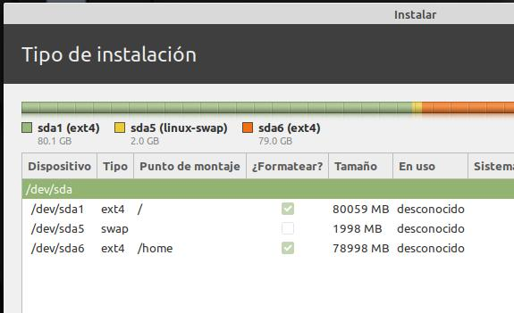
Una vez instalado, cambia el fondo del escritorio y crea una carpeta llamada tu_nombre
Crea un acceso directo del Analizador de uso de disco en el escritorio: en Inicio / Administración / Analizador de uso de disco, botón derecho del ratón y Añadir al escritorio
Sube un pantallazo en el que se vean la carpeta que has creado y un análisis de
/: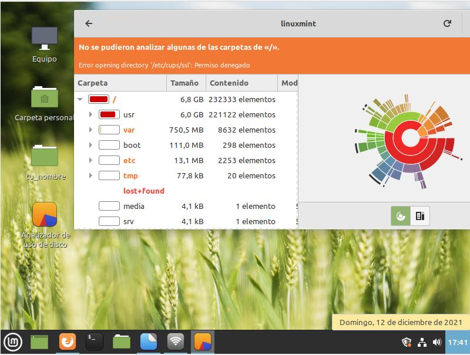

Ejercicio 02
Instalar programas utilizando el entorno gráfico
Ve a Inicio / Administración / Gestor de software, instala Stellarium, ábrelo y sube un pantallazo. Sin entorno gráfico se puede instalar con APT, como vimos en Ubuntu.
Instalar miniaplicaciones
En Inicio / Preferencias / Miniaplicaciones, ve a la pestaña Descargar y selecciona:
Indicador de temperatura de la CPU
Monitor del sistema
Monitor de sensores
En Inicio / Preferencias / Miniaplicaciones del escritorio, instala al menos 4 miniaplicaciones.
Sube un pantallazo en el que se vean las miniaplicaciones en el panel y en el escritorio, y la carpeta con tu nombre, por ejemplo:

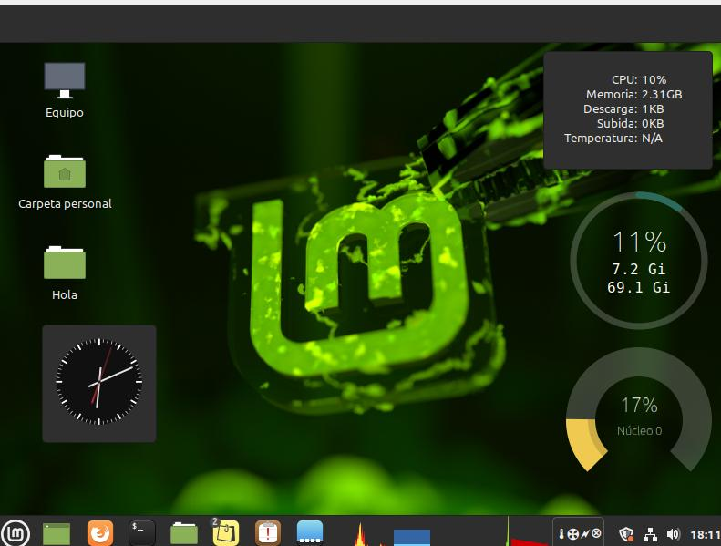
Ejercicio 03. Usuarios con entorno gráfico
Abre el gestor de usuarios, que está en Inicio / Administración / Usuarios y grupos
Crea un grupo llamado grupoa y otro llamado grupob
Dentro del grupoa crea los usuarios grafico_tu_nombre_a1 y grafico_tu_nombre_a2
Dentro del grupob crea los usuarios grafico_tu_nombre_b1 y grafico_tu_nombre_b2
Sube un pantallazo como el siguiente:
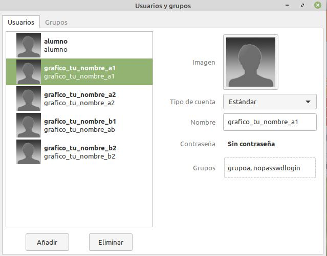

Ejercicio 04. Permisos con entorno gráfico
Podemos ver los permisos de un archivo o una carpeta en sus propiedades (botón derecho del ratón). Entra con el usuario grafico_tu_nombre_a1, crea una carpeta llamada Hola en el escritorio y dale los siguientes permisos:

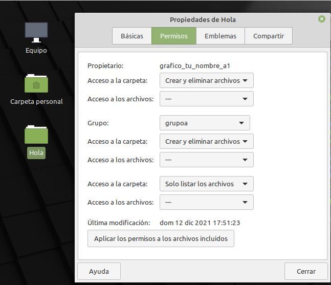
Responde a las siguientes preguntas:
Entra con el usuario grafico_tu_nombre_a2 en la carpeta que has creado e intenta hacer una carpeta nueva. ¿Puedes entrar? ¿Puedes crear una carpeta?
Entra con el usuario grafico_tu_nombre_b1 en la carpeta que has creado e intenta hacer una carpeta nueva. ¿Puedes entrar? ¿Puedes crear una carpeta?
Cuando termines los ejercicios y los haya corregido el profesor, borra la máquina virtual para dejar espacio en el disco duro.
MX Linux#

Descárgate MX Linux con el escritorio Xfce para 64 bits.
Ejercicio 01
Crea una máquina virtual con 2048 MB de memoria base y 150 GB de disco duro
Inicia la máquina y procede a la instalación con el instalador que encontrarás en el escritorio (Installer):
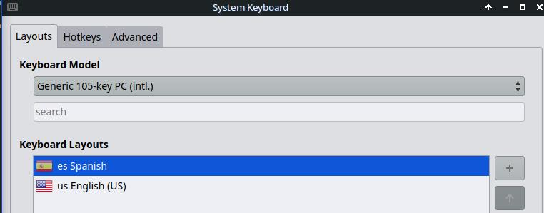
Marca Customize the disk layout:
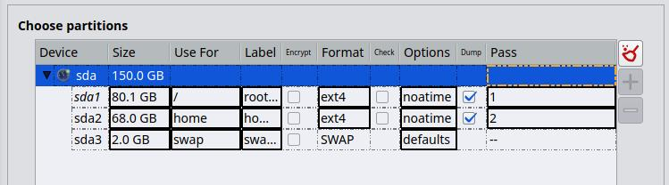
Crea un usuario llamado alumno con contraseña alumno
No crees la cuenta de root
Una vez instalado, cambia el fondo del escritorio y crea una carpeta con tu_nombre
Crea un acceso directo de la Información rápida del sistema: en Inicio / MX Herramientas / Información rápida del sistema, botón derecho del ratón y Añadir al escritorio
Sube un pantallazo en el que se vean la carpeta que has creado y un informe rápido del sistema:
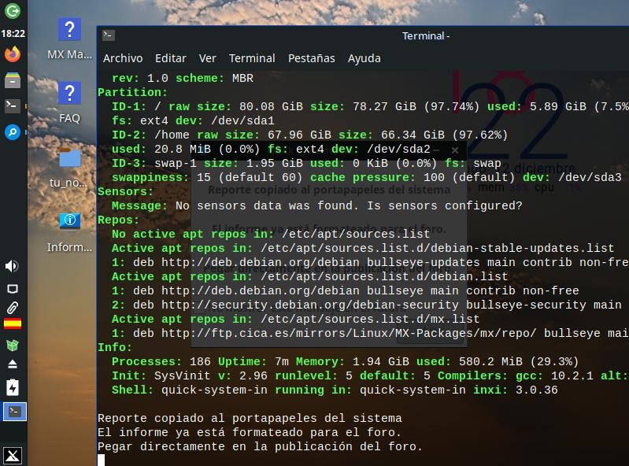


Ejercicio 02
Instalar programas
Para instalar programas con el entorno gráfico ve a Inicio / MX Herramientas / MX Instalar paquetes; en Paquetes populares, instala GIMP. Con la línea de comandos se utiliza APT, igual que en Ubuntu: instala Kdenlive.
Sube un pantallazo en el que se vean los dos programas instalados y la carpeta con tu nombre en el escritorio:

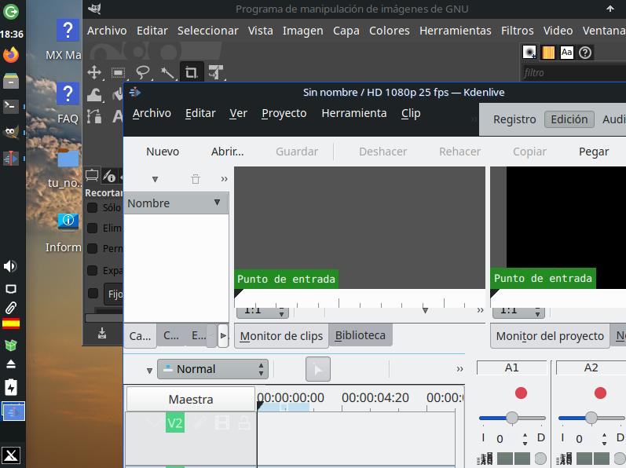
Ejercicio 03
Abre Conky Manager, selecciona uno y sube un pantallazo como este:

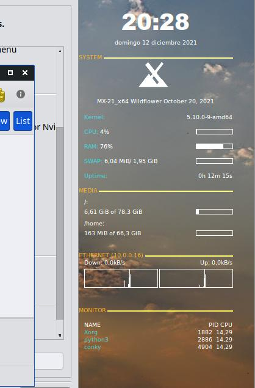
Cuando termines los ejercicios y los haya corregido el profesor, borra la máquina virtual para dejar espacio en el disco duro.
Distrowatch#
Ejercicio 01
Ve a la página https://distrowatch.com/ y selecciona una distribución de GNU/Linux que no hayamos instalado. Instálala en una máquina virtual y, cuando termine la instalación, iníciala y haz un pantallazo de las particiones que has hecho.
Ejercicio 02
Instala un programa y responde a la pregunta: ¿cómo lo has hecho? Sube un pantallazo.
Ejercicio 03
Crea dos usuarios llamados tunombre_01 y tunombre_02, haz un pantallazo y súbelo.
Cuando termines los ejercicios y los haya corregido el profesor, borra la máquina virtual para dejar espacio en el disco duro.